O cenário doméstico envolvendo bombas tem estado vinculado ao crime comum e ao crime organizado, mas se tem notícia diariamente, na mídia, das ocorrências relacionadas com o terrorismo e o fanatismo internacional, no mundo. Alguns chefes de Estado estão constantemente sob risco, ou seja, são alvos em potencial, e outros, sob risco momentâneo. É da competência da Polícia Federal prestar segurança a chefes de Estado em visita oficial ao País, uma vez que o terrorismo político não tem fronteiras nem terreno fértil ou estéril para que venha a acontecer. Os dispositivos explosivos improvisados (DEI), também conhecidos como arte fatos explosivos ou bombas caseiras, são facilmente disfarçados e podem ter vários tipos de forma e tamanho, sendo rústicos ou sofisticados. Algumas bombas têm formato característico, como bomba-tubo, ou são ocultadas em malas, maletas, rádios, gravadores, extintores de incêndio, garrafas, livros e até veículos, muitas das quais são construídas para explodir se tocadas, movimentadas ou meramente por aproximação. As bombas não são construídas necessariamente para explodir. Há as bom bas incendiárias, feitas para iniciar uma reação em cadeia e provocar incêndios de enormes proporções. Existem também bombas postais ou cartas-bomba, que são discriminatórias, ou seja, são feitas para serem ativadas quando abertas pela vítima-alvo. O carro-bomba tem efeito altamente devastador, capaz de causar destruição e morte em massa e indiscriminadamente. Quando se tratar de ameaça de bomba em estabelecimentos públicos ou pri vados – depósitos, almoxarifados, escritórios e bibliotecas são alvos em potencial sob alto risco de um ataque incendiário – é necessário que tanto a segurança quanto o segurado se envolvam com o problema e estejam determinados a solu cioná-lo, cada um com as suas responsabilidades e atribuições. A ameaça de bomba é comunicação normalmente anônima, contra pessoas ou instituições, usualmente feita diretamente ao alvo, por meio de ameaça escrita ou telefônica, sendo este último o meio mais utilizado. Na maioria dos casos, as denúncias atingem seus objetivos que é apenas o de causar tumulto e gerar pânico na área envolvida, provocando o adiamento ou até mesmo o cancela mento de eventos.
Toda e qualquer informação referente a uma ameaça deve ser trabalhada, buscando-se o máximo de detalhes, sempre de maneira discreta e preservando sua integridade e fidelidade para o correto encaminhamento conforme previsto no plano de segurança. Os funcionários que operam mesas telefônicas devem ser treinados para obter o máximo de informações sobre a ameaça. Assim, o funcionário deverá manter a calma ao receber o telefonema, anotar tudo (se possível gravar), procurar prolongar a conversa, estar atento a ruídos de fundo, a voz da pessoa que ligou, dados precisos sobre o artefato, etc, preenchendo posteriormente um formulário com todas as informações. Se possível, a empresa deverá se equipar com iden tificadores de chamada. No caso de ameaças por escrito, a preservação do documento é fundamen tal para a realização de exames técnicos tais como a grafotecnia, a busca de impressões papiloscópicas, etc. Deve-se redobrar a atenção no caso de uma nova chamada para um mesmo local, já que a primeira chamada pode ter sido apenas para avaliar a segurança, identificando os pontos falhos para uma ação mais efetiva. Assim, toda ameaça de bomba deve ser tratada com seriedade e sem gerar pânico. Para se atingir tal fim é fundamental a elaboração de um plano de segurança, contemplando inclusive os procedimentos operacionais a serem adotados. Segue um exemplo de formulário para ser preenchido quando a ameaça for feita por telefone.
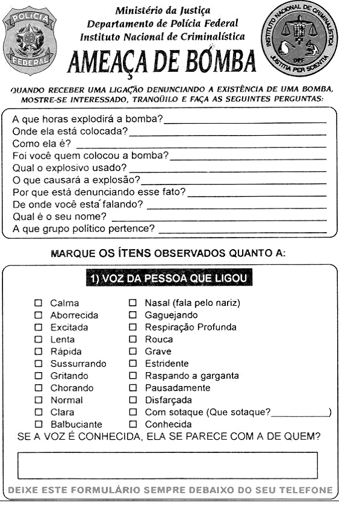
- Para ser preenchido em caso de ameaça de bomba por telefone
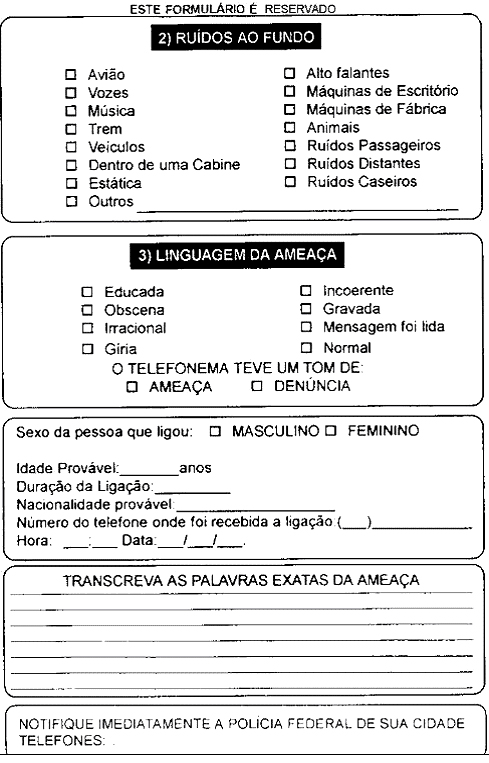
- Para ser preenchido em caso de ameaça de bomba por telefone
O plano de segurança deverá ser elaborado segundo os procedimentos pre conizados pelos órgãos de segurança, visando a convergir os esforços, podendo ser sintetizado nos seguintes pontos:
Na reunião da Assessoria de Risco são avaliados:
A partir do processamento desses dados cada membro realiza a classificação da ameaça, com o uso da seguinte nomenclatura adotada internacionalmente: Ameaça verde - Não é levada em consideração. Ameaça âmbar - Pode vir a ser considerada. Ameaça vermelha - Constitui uma ameaça real. Um fator de enorme relevância para a classificação da ameaça é o chamado PTI (Positive Target Identification) ou Identificação Positiva do Alvo (IPA). Trata-se da informação referente ao alvo da ameaça, como por exemplo: o nome, cargo e setor de um funcionário da empresa, uma atividade específica de um determi nado período da empresa, a nomenclatura típica dos funcionários da empresa ou qualquer outra informação que não seja de conhecimento público incluída na ameaça de bomba, indicando conhecimento singular ou em primeira mão do alvo. De acordo com a classificação da ameaça ocorrerá a ação correspondente. Em resumo, tem-se a seguinte tabela:
| Ameaça verde | Ameaça âmbar | Ameaça vermelha | |
|---|---|---|---|
| Definição | Sem IPA, sem fato (motivação) gerador, sem prece dentes. | Sem IPA, há fato gerador, credibili dade duvidosa. | É específica, alega e existe o motivo, a ame aça é real. |
| Ação | Registrar e desconsi derar. | Vistoria e, se necessário, evacu ação (parcial ou total). Vigilância crescente. | Evacuação imediata total ou parcial, alto risco e sem tempo para vistorias (caso extremo). Ameaça real. |
Tabela 4 - Classificação da ameaça.
Sempre deverá ser feito o registro da ameaça, o qual poderá ser levado em conta em uma nova ameaça.
O objetivo principal do planejamento da vistoria é assegurar que ela seja realizada em tempo hábil e de forma efetiva. Como uma vistoria completa e sistemática leva tempo, as responsabilidades devem ser divididas entre, pelo menos, dois funcionários dos setores a serem vistoriados. O plano deve ser testado, discutido, avaliado e, se necessário, corrigido em pontos falhos e compilado em documento para divulgação.
Existem três tipos de vistoria, cada qual com vantagens e desvantagens, a saber: Vistoria de rotina (fiscalização) - uma equipe encarregada unicamente de fiscalizar as áreas sob sua responsabilidade, sem estar em estado de alerta. Geralmente, não vistoria locais sujos ou desagradáveis. A eficiência desse tipo de vistoria gira em torno de 50% a 65%. Vistoria pelos próprios ocupantes do local - geralmente os próprios ocu pantes do local são os mais qualificados para vistoriar suas respectivas áreas, reconhecendo o que a eles não pertence e é estranho. Esse tipo de vistoria é relativamente rápido e eficiente, mas exige treinamento adicional, o que pode fazer com que alguns relutem em fazer a vistoria por causa do risco a que podem estar sendo submetidos. Esse tipo de vistoria alcança 80% a 90% de eficácia. Vistoria por equipe treinada - A equipe deve estar compromissada com a segurança, como: brigada de incêndio, pessoal da segurança física do local ou Esquadrão antibombas da polícia. Essa equipe necessita de treinamento técnico em vistorias e avaliação do poder destrutivo dos explosivos, além de ter disciplina, raciocínio lógico e iniciativa para que obtenha um desempenho satisfatório. Essas equipes proporcionam um alto nível de segurança, mas são mais vagarosas, em função de não estar familiarizada com o local sob ameaça. A maior vantagem é que os índices de eficácia dão resultados acima de 90%. A doutrina recomenda que, na maioria dos casos, a vistoria seja realizada pelo pessoal ocupante do local ameaçado. Em caso de localização positiva de um objeto suspeito de ser um artefato explosivo, deve ser acionado o esquadrão antibombas da polícia. No caso de vistoria efetuada por equipe treinada a busca deve ser feita com o acompanhamento da segurança local e/ou de funcionário que conheça o ambiente. Indiferentemente do método empregado, a vistoria leva tempo e, com freqü ência, à medida que trabalho prossegue, gera fadiga, perda de concentração e estresse, comprometendo a eficácia. Portanto, devem ser planejados intervalos para descanso e/ou revezamento entre as equipes, mantendo-se, assim, o mais alto nível de segurança.
Existem vários métodos para desencadear uma vistoria: por meio de sistema de som, de forma codificada para evitar pânico e interrupção desnecessária das atividades; usando telefonemas em cascata, em que cada pessoa avisa a outras três e assim sucessivamente; por meio de radiocomunicação em locais que tenham esse sistema à disposição da segurança.
As vistorias devem ser sempre efetuadas por equipes de no mínimo dois téc nicos. A busca deve ser realizada de fora para dentro e de baixo para cima. Todos os locais vistoriados deverão ser marcados e comunicados ao Centro de Controle a fim de evitar repetições. O ensaio dos procedimentos de vistoria deve ser o mais realista possível, observando os objetos que:
Nenhuma área deve ficar sem ser checada.
A vistoria da parte externa de um local ameaçado é especialmente importante, pois é por onde se inicia o contato e o acesso do criminoso que deseja atingir o seu alvo. Sugerimos o padrão de vistoria mostrado nas figuras 16 a 18. São vistoriados floreiras, cestas de lixo, veículos estacionados e qualquer objeto ou obstáculo entre 15 m e 20 m das edificações.
Assim como a área externa de uma edificação, a área de acesso público é bastante vulnerável. Os efeitos costumam ser desastrosos no caso de uma explo são, podendo ser o objetivo do criminoso espalhar terror, pânico, destruição e provocar uma grande repercussão na mídia. O padrão de vistoria representado na figura 20 é o mais adequado para esse caso. Devem ser vistoriados salas de escritórios, salas de espera, escadas, elevadores e banheiros. Estes últimos são estatisticamente os locais preferidos para ocultação de artefatos explosivos. A vistoria deve prosseguir andar por andar conforme ilustrado na figura 19. Em resumo, as vistorias devem ser feitas, geralmente, de fora para dentro e de baixo para cima. Obs.: Todo o local já vistoriado deve ser marcado ou uma área central de apoio deve ficar responsável por anotar os locais já verificados, evitando dupli cidade de trabalho ou, pior, a omissão. Após toda a área de acesso público de cada andar ter sido vistoriada, deve-se proceder à vistoria detalhada das salas conforme ilustrado na figura 21.
As vistorias detalhadas de ambientes, como o de uma sala, são melhores executadas por técnicos treinados. Devem ser feitas com equipes de, no mínimo, dois técnicos. Inicia-se por uma breve parada na porta de acesso para avaliação audiovisual do local a ser vistoriado. Ruídos ou objetos suspeitos já podem dar indicação da necessidade de evacuar o local, após a devida autorização pelo coordenador da vistoria. O ambiente deve ser dividido visualmente em três seções, a saber: 1) Do chão (inclusive) até a altura da cintura; 2) Da altura da cintura até a altura da cabeça; 3) Da altura da cabeça até o teto, inclusive. Um dos técnicos deve iniciar a vistoria do ambiente no sentido horário e o outro no sentido anti-horário, verificando lustres, objetos sobre os móveis, etc. As técnicas citadas estão ilustradas nas figuras 22 a 25.
Caso um objeto suspeito seja encontrado, a principal regra de segurança é: NÃO O TOCAR. As pessoas que por ventura estejam nesse ambiente devem ser encaminhadas para uma área segura. O coordenador de segurança deve ser informado imediatamente sobre o objeto encontrado para que inicie os proce dimentos de evacuação do local. A evacuação deve ser conduzida a partir dos pisos superiores e distantes do local sob ameaça. Todas as informações devem ser imediatamente transmitidas à central de controle. No caso de vistorias de segurança realizadas por policiais, a mesma regra deve ser seguida: NÃO TOCAR o objeto suspeito até a avaliação de qual técnica de remoção e/ou desativação será utilizada. A pessoa (empregado, segurança ou policial) que encontrar o objeto suspeito deve imediatamente ser apresentado ao coordenador de segurança para ser entrevistado por este último e, em caso de atendimento policial, ficar à disposição da polícia para prestar esclarecimentos. Objetos suspeitos não devem ser colocados em áreas confinadas. Devem-se abrir portas e janelas, com exame prévio, para facilitar o escape das ondas de choque numa possível explosão. Retirar das proximidades da área crítica o material inflamável ou explosivo que porventura esteja armazenado, evitando a potencialização dos efeitos da explosão. Providenciar o desligamento de equipamentos e, dependendo do caso, de elevadores, visando deixar o ambiente sem alterações. Caso um objeto suspeito seja encontrado, procurar saber a quem pertence, quem o deixou no local, etc. Se não pertencer a ninguém, evacuar o local, mas não manusear, tentar abrir ou remover o material suspeito. Não tentar remover ou manusear um artefato explosivo encontrado e que esteja aparentemente “falhado”. Não tentar desroscar uma bomba-cano, pois partículas de explosivos ou limalha de ferro podem estar presentes nas roscas de fechamento. Não tentar os mesmos procedimentos operacionais utilizados para bombas de fabricação caseira em artefatos militares. Notificar a unidade militar mais próxima. Cercar o material suspeito com sacos de areia, capim, poltronas, etc., para que orientem as ondas de choque e recolham os fragmentos da bomba. Um diagrama ou esboço do objeto e do local onde foi encontrado deve ser feito tão breve quanto possível, para ser apresentado ao esquadrão antibombas da polícia, que deverá planejar seus procedimentos, levando em consideração, também, o diagrama apresentado. Notificar os bombeiros e, quando necessário, solicitar ajuda médica, deixando uma equipe de plantão no hospital. Não cortar fio, arame ou cordão que esteja ligado ao objeto suspeito.
Após a evacuação do local, terá de ser tomada a decisão de reocupação do local das instalações, retornando-se à rotina. Quando um objeto suspeito é localizado e a polícia é acionada, o local permanece sob controle policial até que a área seja declarada segura. Uma vez declarada segura, o controle da área retorna ao coordenador de segurança para a reocupação. Quando a ameaça estipula a hora da explosão e isso não acontece, deve-se aguardar o prazo mínimo de 20 minutos antes de iniciar a reocupação, começar ou continuar a vistoria. Nos casos em que a evacuação do local tenha sido ordenada sem vistoria, deve-se efetuar essa vistoria, por cautela, antes da reocupação das instalações. Obs.: Deve ficar claramente entendido que, por causa da ameaça de bomba, existe a possibilidade de que as instalações venham a se tornar um local de crime, devendo permanecer sob controle policial por um considerável período de tempo.
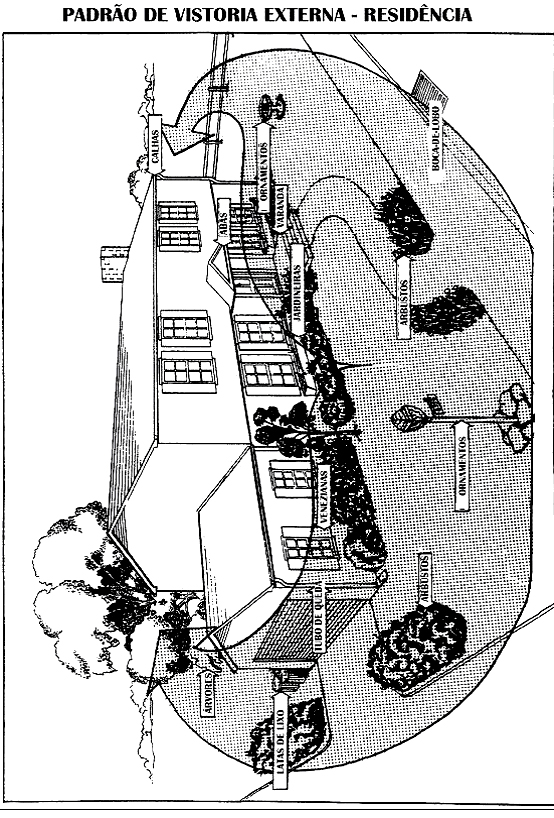
Figura 16 - Padrão de vistoria externa – residência.
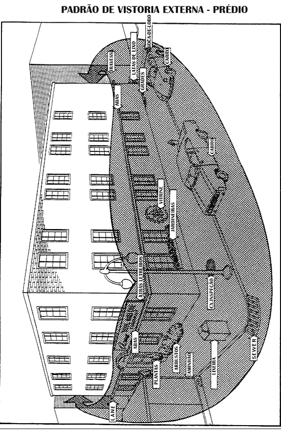
boca-de-lobo travessa
Figura 17 - Padrão de vistoria externa – prédio.
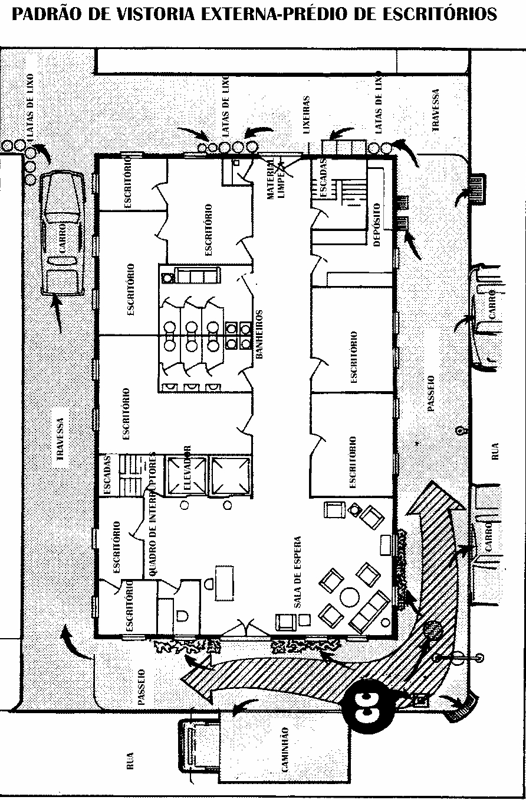
Figura 18 - Padrão de vistoria externa – prédio de escritórios.
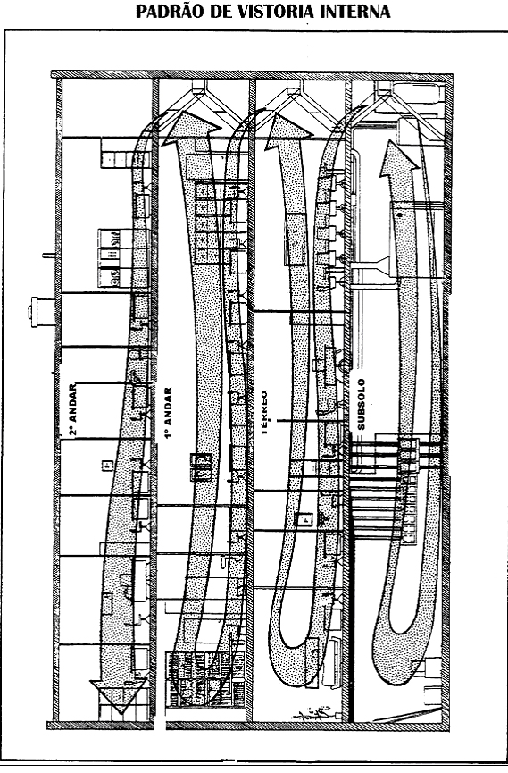
Figura 19 - Padrão de vistoria interna – prédio de escritórios.
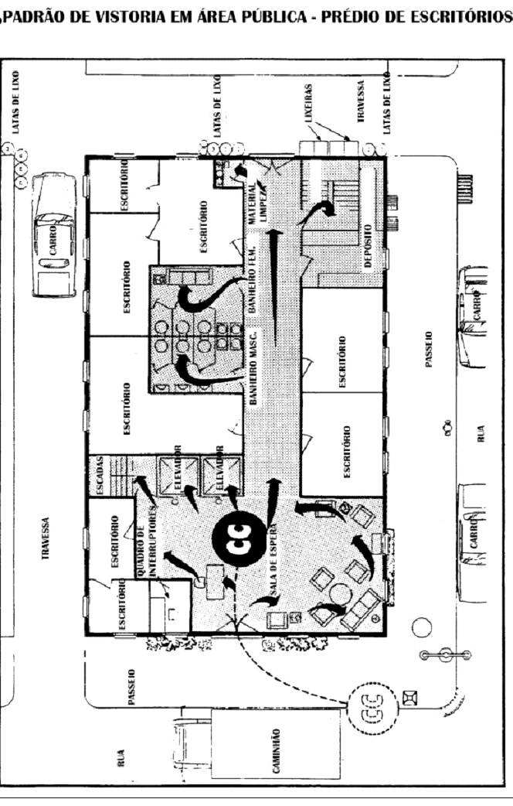
Figura 20 - Padrão de vistoria em área pública – prédio de escritórios.
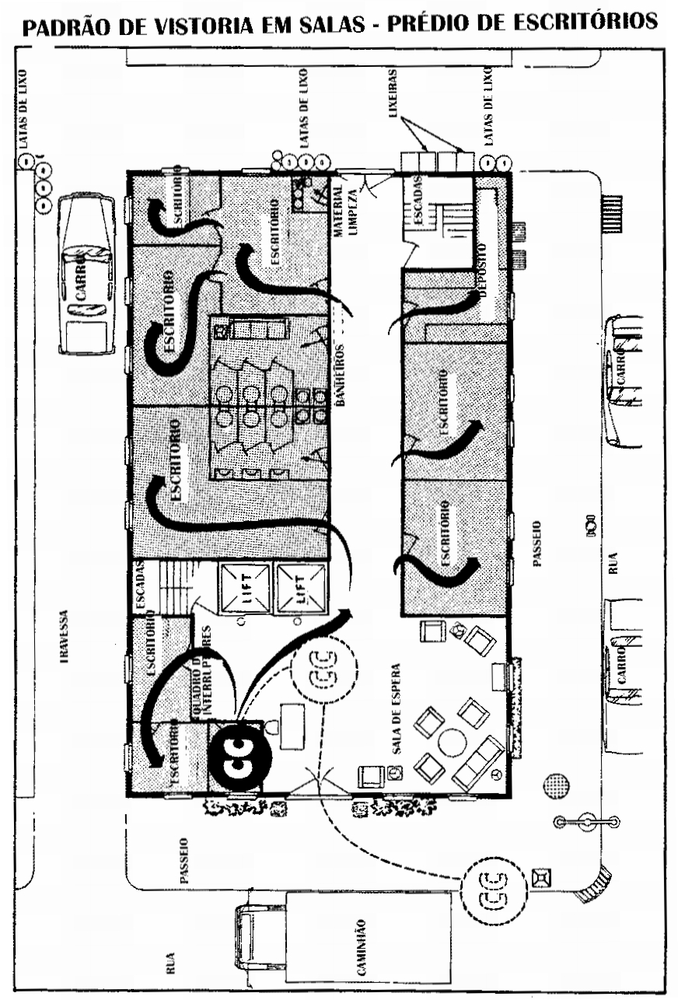
elevador elevador
Figura 21 - Padrão de vistoria em salas – prédio de escritórios.
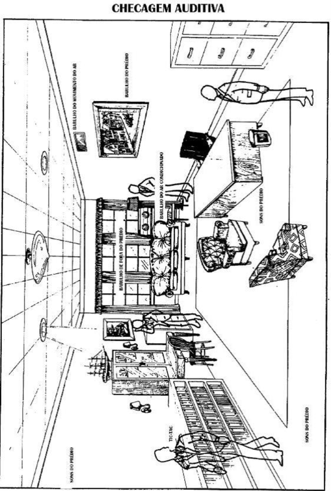
Figura 22 - Checagem auditiva.
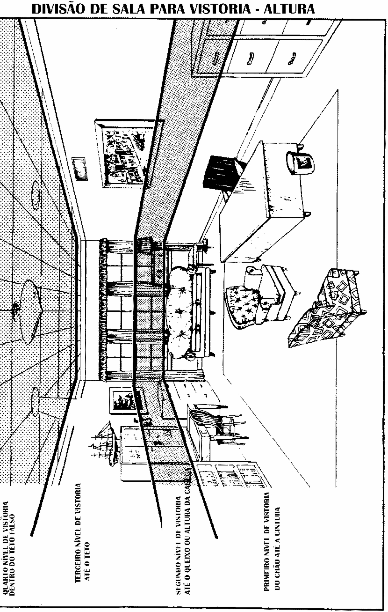
Figura 23 - Divisão de sala para vistoria – altura
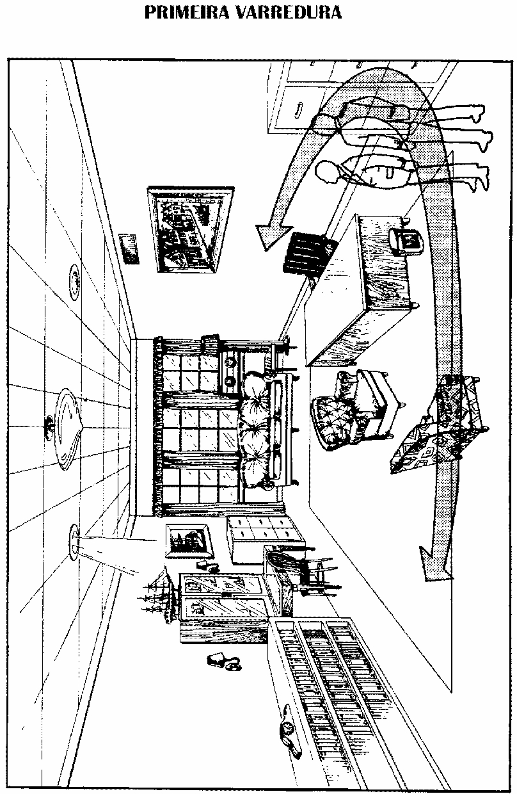
Figura 24 - Primeira varredura.
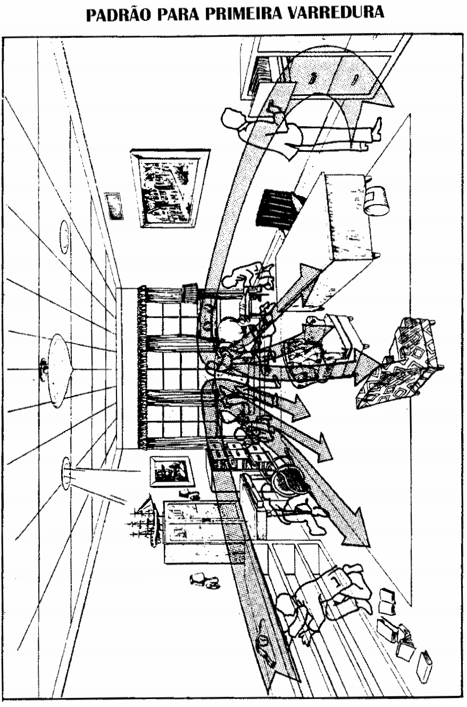
Figura 25 - Padrão para primeira varredura.
Os trabalhos de vistorias preventivas freqüentemente envolvem diversos setores dos órgãos de segurança pública bem como, de acordo com o caso, os mais diversos segmentos da sociedade. Como todo bom trabalho em equipe é fundamental uma interação mínima entre todos os componentes. No âmbito da Polícia Federal devem interagir todos os setores direta ou indi retamente envolvidos tanto na execução dos trabalhos como principalmente no planejamento, otimizando recursos humanos e materiais empregados, e analisando criticamente em conjunto os resultados. No relacionamento da PF com os demais componentes envolvidos com os trabalhos de vistorias citados anteriormente, deve-se buscar a padronização de pro cedimentos, norteados pela segurança, evitando assim que divergências oriundas de escolas de formações distintas criem barreiras na consecução dos trabalhos.
Os carros-bomba são dos mais perigosos artefatos explosivos improvisados que podem ser encontrados. Têm alto poder de sinergismo pela fragmentação de sua própria estrutura e hospedam uma gama de dispositivos mecânicos, elétricos e eletrônicos capazes de ativar explosivos, que podem ser poucos gramas, geral mente utilizados em atentados pessoais, até centenas de quilogramas, ocasionando destruição de grande monta e perda de muitas vidas humanas. A vistoria de um automóvel assemelha-se à vistoria de uma edificação, com a aplicação dos mesmos princípios básicos.
Deve-se iniciar o trabalho de vistoria externa, eliminando gradual e logica mente perigos potenciais. É prudente fazer uma observação à distância, usando binóculos para notar algum sinal suspeito óbvio. Decidindo-se pela aproximação, esta deve ser feita em sentido diagonal ao automóvel, concentrando-se a atenção na área ao redor do automóvel e man tendo-se alerta para sinais de entrada forçada (arrombamento e/ou violação), o que sugere a colocação de algum artefato em seu interior. Outra indicação pode ser a verificação de resquícios de fitas adesivas, fios, cordões ou barbantes, marcas no solo, pegadas, etc. ao redor ou embaixo do automóvel. Um artefato explosivo e/ou incendiário pode ser colocado em um automóvel insuspeito. Geralmente são utilizados os espaços originais encontrados embaixo do automóvel, portanto deve-se vistoriar por baixo, tentando observar algum sinal de remoção da sujeira proveniente do uso de partes como: chassis, parte interna das rodas, pára-lamas, etc. Deve-se lembrar de verificar o sistema de exaustão (escapamento), as partes internas dos pára-choques, rodas, assim como suspen são, tanque de combustível, radiador, bloco do motor, etc. Deve-se observar também a possível existência de fios com a mesma bitola dos fios usados em detonadores elétricos próximos a partes elétricas do automóvel, como lanternas de sinalização, faróis, bateria, etc.
Completada a vistoria externa, deve-se passar para a parte interna do auto móvel, primeiramente inspecionando através dos vidros, até onde a visão possa alcançar. Em seguida, instalar ganchos e/ou ventosas presas a cordas que serão puxadas a distância, provocando movimento e eliminando a possibilidade do uso de sistemas de acionamento por movimento. Essa é uma técnica ativa que só deve ser usada por técnicos da polícia. Estando o automóvel aberto ou na presença do proprietário ou motorista, inicia-se a vistoria interna, atentando-se para o seguintes itens: Assoalho - primeiramente observar embaixo dos assentos, tapetes e forração do assoalho. Assentos - investigar assentos, encostos, descanso de braço, encosto de cabeça, bolsas, porta-objetos, cinzeiros, etc. Acessórios - embaixo do painel, dentro de dutos do ar-condicionado e/ou ar quente, isqueiros, rádios, porta-luvas, etc. Compartimento do motor e porta-malas - inspecionar cada um desses itens detalhadamente, observando o pneu estepe e seu compartimento, caixa de ferramentas, etc. Caso seja encontrado algum objeto suspeito, não tocá-lo e isolar a área.
A vistoria de um automóvel torna-se mais fácil se o proprietário ou motorista forem localizados, para que possa prestar esclarecimentos a respeito de itens sob suspeição. Se for possível, deve-se efetuar vistoria comparativa, utilizando um automóvel de igual marca e modelo, com o auxílio de um mecânico. Esgotadas essas possibilidades por meio de investigação, os técnicos da polícia terão de tomar providências utilizando técnicas ativas de abordagem: abertura de compartimentos com uso de ventosas e ganchos presos a cordas, uso de espoletas, cordel detonante ou canhão d’água.
Alguns procedimentos devem ser observados na realização da vistoria:
Quanto aos pontos de ocultação mais comuns, podem-se listar: Trem de pouso e aterrissagem; Compartimentos de carga; Lixeiras dos toaletes; Compartimentos de toalhas de papel; Embaixo das poltronas; Bagageiros suspensos. No caso de se encontrar o possível artefato, além dos procedimentos nor malmente adotados, deve-se pensar em esvaziar os tanques de combustível do aparelho e remover o artefato para uma área remota.
A fundamentação legal aplicada para a área de competência do Departamento de Polícia Federal está expressa na legislação a seguir: - Itens I e IV do parágrafo primeiro do artigo 144 da Constituição Federal; - Norma de Serviço nº 001/80-CCP/DPF-RESERVADA; - Instrução Normativa nº 008/88-DG/DPF; - Instrução Normativa nº 005/04-DG/DPF.